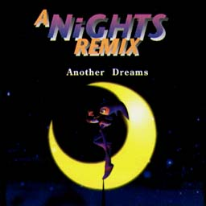
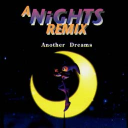

A NiGHTS REMIX
Another Dreams


A NiGHTS REMIX
Another Dreams

|
発売元：徳間ジャパン |
|
徳間ジャパンからリリースされたナイツのリミックス盤。 多くのリミックスアルバムがそうであるように、このアルバムもタイトルの通りナイツの世界観とは一線を画した、どちらかというとナイツの音楽の断片を切り張りし、クラブで機能するように作られたもので、「聴く」アルバムというよりは「踊る」アルバムなのかもしれません。 ナイツのコラージュされた映像と共に大音量で踊りながら聴きたいものです。 ナイツの世界を堪能した人には不思議な感覚で楽しめることでしょう。 そんなゲームのあとの2次的な楽しみについても、これからはどんどん追求していきたいものです。 そんな予感をさせる一枚です。（はたや） |
|
01. Message from NIGHTOPIA ...We'll be Back Mix 02. DREAMS DREAMS ...Peaceful Mix 03. Paternal Horn ...Swea-T-shirt Mix 04. The Mantle ...Acid acid love Mix 05. DREAMS DREAMS ...Club 12" GK.Mix 06. Gate of Your Dream ...Deep groove 07. Under Construction ...Wow wow 70's Mix 08. Know Thyself ! ...Thirsty night club Dub 09. [Interlude] 10. I want to see you smile again - DREAMS DREAMS 11. Growing Wings ...Peak Power-From-After Hour Climax |
|
・次の作品を見てみたいっす!! ・関連CD＜国内編＞のページへ ・Music CDのページへ ・Sound Web Siteのトップページへ |